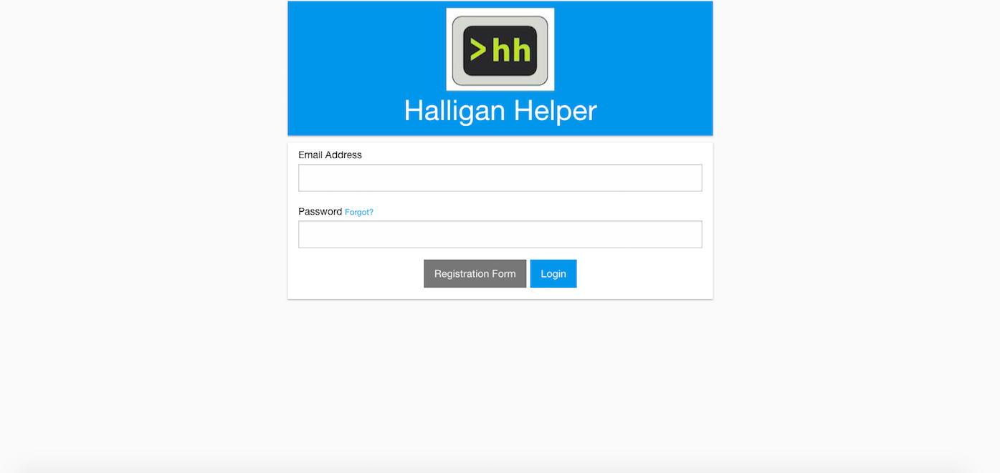
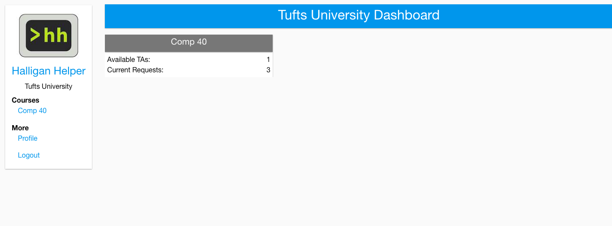
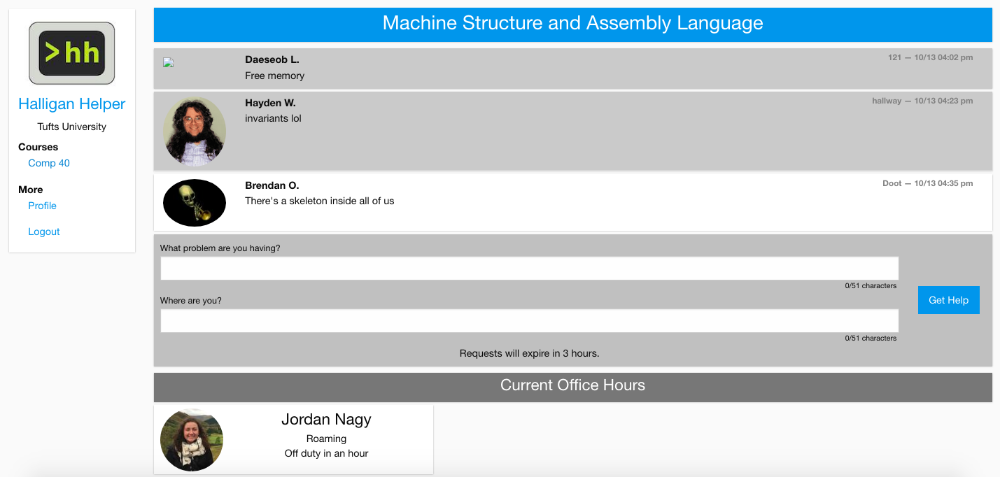
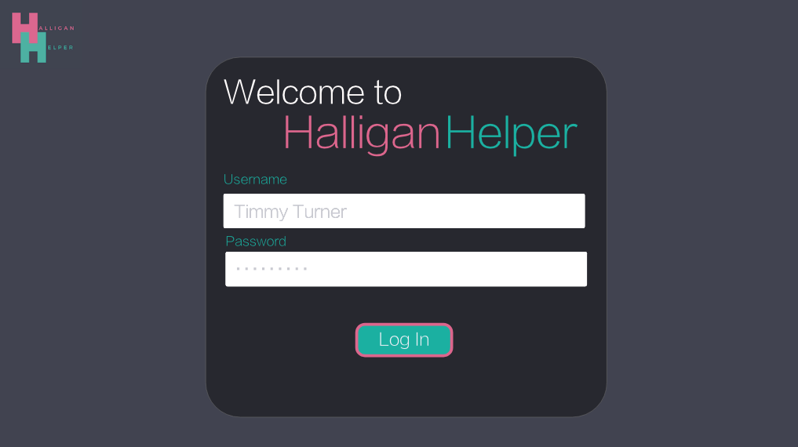
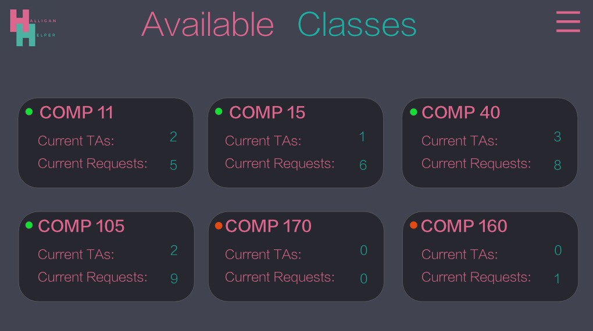
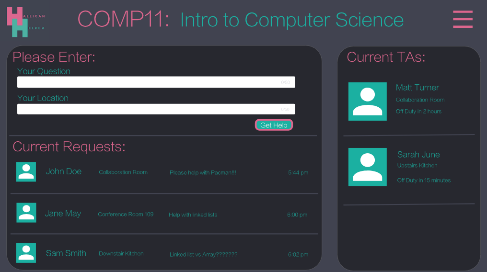
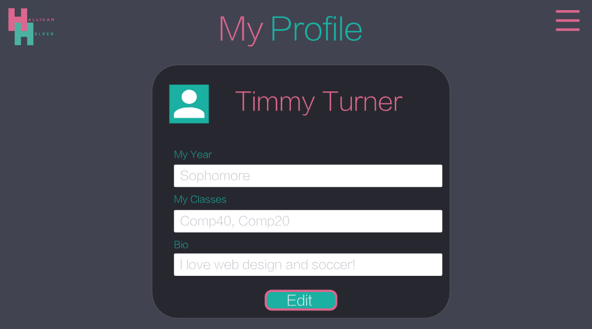

Halligan Helper
Idea
This project is a redesign of the current site used by the Tufts University Computer Science department for TA-Student assistance. It is essentially a queue system organized by class, where students indicate their issue and location, and the TA for the class helps the students in order. This redesign was done as part of a design challenge called Design Wars, a component of the Tufts annnual Hackathon, Polyhack. This is a very early-stage design, as it was done within the 3 hour time limit of the challenge.
Main Components and Current Site
The main components of this site are the Login page, the Home page, and a class-specific queueue page. For reference, here are those components on the current site:
  Initial Thoughs
When thinking about how to redesing this site, the main things I wanted to focus on were:
- (1) Changing to dark theme: this is a frequently viewed site by students, so it should be easier on the eyes
- (2) Creating a unified and aesthetic color palette and theme
- (3) Choosing cleaner typography
- (4) Redesigning the logo
- (5) Modifying the layout so that so much space is not wasted and there isn't unnecessary whitespace
- (6) Introducing access to additional useful infromation
Redesign of Main Components
First, I redesigned the the 3 main components (Login page, Home page, and class-specific page), hitting the previously mentioned focuses (1)-(5).
I implemented a dark theme, making it less stressful on the eyes and overall more visually pleasing. Since this site is not complex, I did not want to overdo the colors, and picked only 2 main and vibrant colors for the overall theme. To keep it simple, I also only utilized one font.
For the home page, I organized the available classes into simple, rounded cards with the relevant information. I also added a dot next to each class to indicate if there was anybody on duty to help -- so that students do not have to read all of the information to quickly determine this. On the current site, you are not able to click on the class card to view the class-specific page, which seems very counter-intuitive. A user has to navigate to the side bar and search and pick the class, which requires unecessary effort and confusion. In my design, the user simply clicks on the card.
For the class-sepecific page I made various layout changes. First, I placed the area to enter your issue and location above the queue list, as opposed to the current version where it is below, as this is more useful to the student. The main function is asking for assistance, rather than viewing who else is on the queue. Additionally, on the current site there is a lot of wasted space in the queue area, so I made the box more compact, and layed out the information in a more intuitive order: name, location, problem, and time. Along with that, I made the component with available TAs on the side, instead of under the queue. This utilizes the given space more effectively, and allows the students to see all the information at once, instead of having to scroll down.
Below are the desings for these 3 pages, done in AdobeXD:
  Additional Features
I also thought it would be useful to include a small profile page, with the user's name, photo, current year, current classes, and bio, so that a TA can get an idea about who they are helping, and a student can find out more about a TA.
I also thought it would be useful to have a menu on the side so more information can be navigated to. So that this feature does not take up unecessary space, I implemented it as a popout hamburger menu. In this menu, I thought it would be helful to include links to a user's personal profile, a list of current classes, class information, settings, and log out. I have not designed the pages for any of these components yet (besides the profile page), but I believe they would be helpful. For example, having a page with details about every class including a description, the current assignment, and all TAs for the class.
Below are the designs for these 2 components:

Interactive Prototype
Here is a short video of the full interactive design: